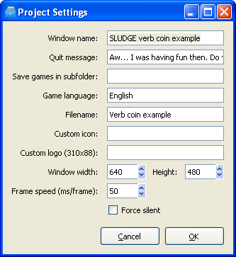

You can open this dialog from the Project menu. Here is the place to enter project specific settings.

When you've finished changing the project properties, press OK to update the project with the new settings. If you want to close the dialog box without changing the project, press the Cancel button.
Window name:
The text which will be visible in the title bar of the game when it's running.
Quit message:
Enter the prompt to be displayed when a player tries to quit in the Quit message text area. This will only be displayed if the player tries to close your game using the button in the top-right corner of the window or the Close option on the game's System menu (or by pressing Alt-F4 when the game isn't running full screen). The prompt will not appear, whether the game is running full-screen or windowed, in response to a call to the quitGame command, which always closes the game immediately. It will also never appear on Linux.
Save games in subfolder:
By default, any run-time files which your SLUDGE game uses (i.e. any custom data or saved game files) will be created in (and loaded from) the application data folder of the game. (Documents and Settings/username/Application Data/Window name of the game on Windows, $HOME/.sludge-engine/Window name of the game on Linux and (FIXME) on Mac) Should you want to keep these run-time files in a subdirectory instead, enter the name of the folder in this box. The folder need not exist already - when your game starts, it will create the folder if it doesn't already exist. The name you specify must be a valid filename... i.e. no illegal characters, such as ":", "/", "\", "?", "*" or "|".
Game language:
The language of the strings in your code. This is used in the language selection field of the SLUDGE Engine on Windows and Mac. The names of additional languages (translations) are specified using the Translation Editor when they are created.
Filename:
The name of the project file to be created by the SLUDGE compiler when the project is compiled. The extension ".SLG" will be added automatically - please don't add this yourself. The name entered here is also used for a file containing all the strings in your game - see the Spellchecking the Strings in your Game topic.
Custom icon:
You can specify an icon to be used in your game's title bar, plus in the taskbar and in the window that appears should a player switch between programs using Alt-Tab here. Leave the box empty to use the normal SLUDGE icon.
Custom logo:
You can provide a logo that is shown in the preferences dialog of the engine instead of the SLUDGE logo. It must be 310x88 pixels large. Specify the file name here.
Window width and Height:
Enter the size of the window you wish your game to use in pixels.
Frame speed (ms/frame):
The minimum time, in milliseconds, for which each frame should be displayed on-screen. The lower the number, the faster your game will run... provided it is being run on a machine which is capable of the speed requested. Higher numbers mean your game will run more slowly on a fast machine, but will act consistently across different specifications. If you're more used to thinking in terms of how many frames you'll get per second, that figure is 1000 divided by the milliseconds per frame value... eg. 25 milliseconds per frame gives (1000 / 25 =) 40 frames per second.
Force silent:
(FIXME: Don't know what this does.)
About the SLUDGE Project Manager
Project Manager: "Preferences" Dialog
SLUDGE and this SLUDGE documentation are copyright Hungry Software and contributors 2000-2010